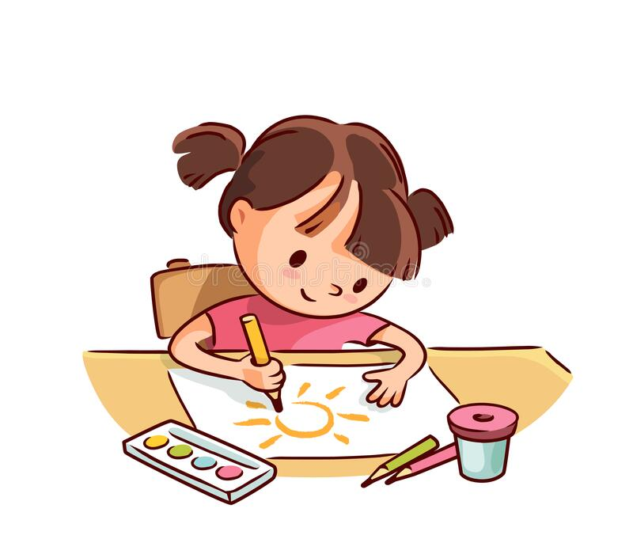

Gardening may be a fun and relaxing way to get in touch with nature, but
did you know that it also has plenty of health benefits? Gardening is an
activity that is good for both the mind and body, and can be enjoyed by
people of all ages. Plus, you get to eat the delicious fruits,
vegetables and herbs that you grow. So, grab your tools and get in the
dirt! It only takes a little bit of gardening to work up a sweat.
According to the Centers for Disease Control and Prevention, just 2.5
hours of moderate activity each week can help reduce the risk of many
health problems, including heart disease, stroke, high blood pressure
and Type 2 diabetes.
Listening Music
Listening to music is a hobby because it can be very relaxing and
enjoyable. According to Scientific American, listening to music helps
reduce stress and anxiety, improves mental functions like memory and
reasoning, promotes cardiovascular health, increases pain tolerance,
reduces depression which improves mood. It also boosts the immune
system, improves sleep and has been proven to have a positive effect on
the body. It is also been proven that listening to music can help
individuals focus better. According to a book called Music and Work: The
Science and Psychology of Working in Groups , by Dominic Heale, music is
a source of stimulation for the brain which can be a great thing if you
need to study or get your work done. It helps promote attention and
focus so you are able to concentrate on what you are doing more
effectively.

Drawing
Drawing, or art in general, is an excellent option for a new quarantine
hobby to fight boredom. Drawing is not only calming, but it also hones
beneficial skills and psychological benefits via art therapy. Art
therapy is rooted in the idea that creative expression can foster
healing and mental well-being. Art, including drawing, can help you
escape from reality and express unpleasant feelings you may have trouble
putting into words.